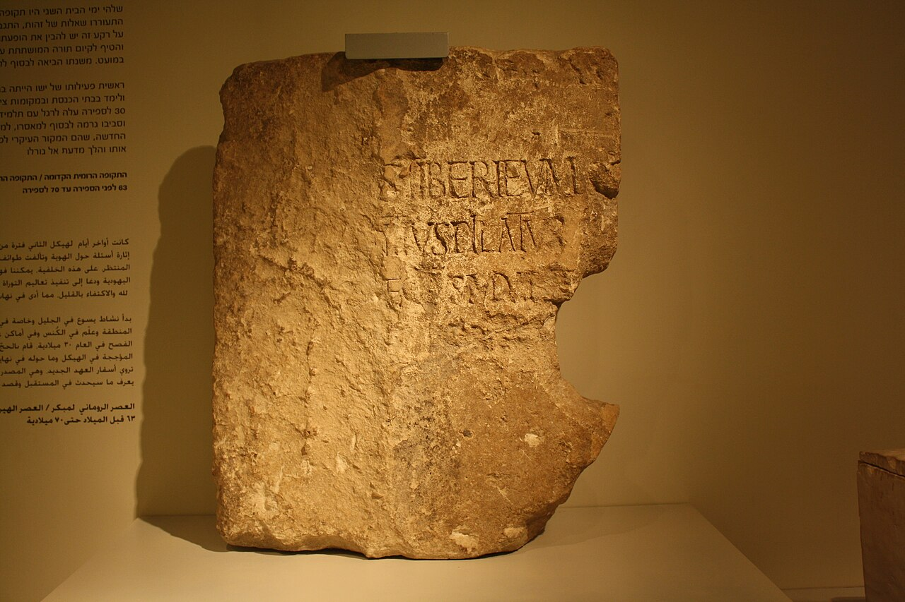

Pilate Stone

- Find Name
- Pilate Stone
- Historical Period
- Roman
- Artifact Date
- AD 26-36
- Date Discovered
- 1961
- Discovery Location
- Caesarea Maritima, Israel
- Current Location
- Israel Museum, Jerusalem
- Timeline Era
- Life of Christ
- Description
- A limestone dedicatory inscription found reused in the theatre at Caesarea, reading in part 'Pontius Pilate, Prefect of Judea.' It is the only surviving inscription naming Pilate, discovered during Italian excavations in 1961.
- Biblical Significance
- For centuries Pilate was known only from the Gospels and a few Roman and Jewish writers; this stone confirms he was a real Roman official with the title prefect in Judea. It anchors the trial of Jesus, and therefore the cross itself, firmly in Roman administrative history.
- Evidence Class
- Direct
- Interpretations
- Scholars agree the stone names Pontius Pilate as prefect of Judea, confirming his title and tenure; it was reused in a later theater, so its original building is unknown.
- Scripture Illuminated
- Related People
- Related Books
- Related Places
- Related Events
Awaiting Review Not yet checked against scholarly sources. Treat its claims as provisional until this entry is reviewed. About verification
Last reviewed: not yet reviewed